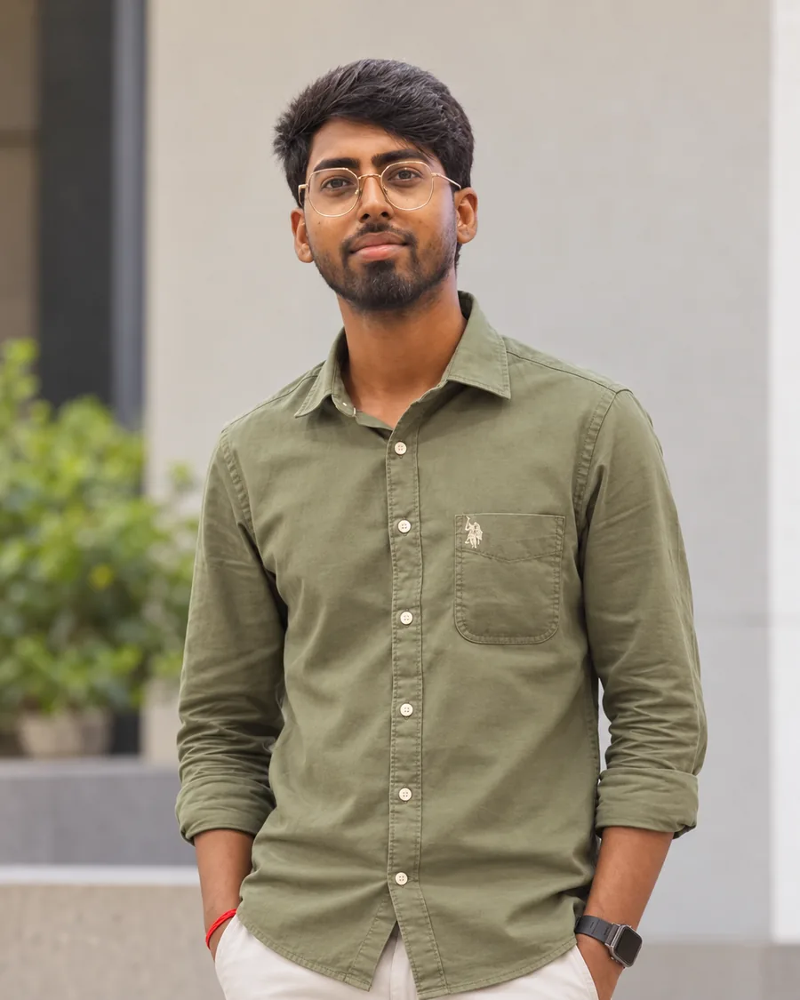
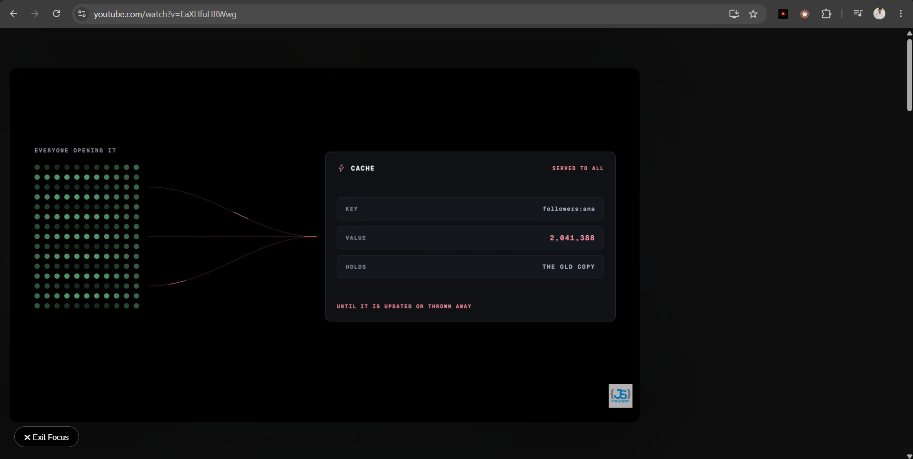

Interfaces
React · TypeScript · JavaScript
Anmol Patel Software engineer
A digital conservation wall for the projects, failures and lessons worth preserving.
An artistic interpretation inspired by conservation at Nalanda Mahavihara.
Press the glowing brick to recover record 01.
Activating this brick opens the FocusTube engineering case study.
About the builder
I’m Anmol Patel, a software engineering student from Nalanda, Bihar. I build practical products where technology meets people and real-world problems.
Understand what failed. Change what matters. Preserve what still works.Enter the builder’s manuscript

Skills and craft
Each tool is tied to a system I have built, tested or deployed—not a decorative list of logos.
React · TypeScript · JavaScript
Node.js · Python · REST APIs
MongoDB · MySQL
AWS Amplify · Git · GitHub
Understand → Build → Test → Preserve
Inspect the craft instrumentRecovered project 01
The first record is complete: a real problem, the engineering response, a working artifact and public proof.

PUBLICLY VERIFIED · MANIFEST V3 · V1.1.0
AWS architecture
The production portfolio is complete without a model call. That keeps the experience fast, resilient and inexpensive.
API Gateway → Lambda → Bedrock → cited portfolio records
Deployment verified on AWS Amplify · ap-southeast-2
Read the architecture ledgerFinal folio · direct correspondence